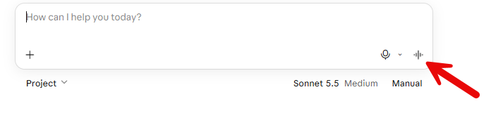
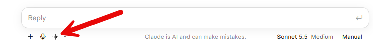

Trip-ready in 10 days, inside Claude.
7-minute voice lessons built exclusively for travelers. Learn what to say (always polite), what locals say back, and the signs you'll see — at $0 extra on your existing Claude plan.
Built for your departure date, not 6 months of grammar
Six real-world survival topics (Basics, Restaurant, Transport, Understanding & Help, Shopping, Sightseeing) — 3 short lessons each, tailored to your trip countdown.
1. Formal Register Only
Every phrase you produce is polite adult speech (Italian Lei, French vous, European Portuguese o senhor / a senhora) — never accidentally say ciao to a hotel clerk.
2. Say · Hear · Read Signs
Don't freeze when a local replies. Every 7-minute lesson trains polite spoken phrases, realistic local replies (Ha prenotato?), and street or menu signs (Binario, Coperto, Uscita).
3. Voice-First & Habit-Driven
Model-first Pimsleur drills, spoken "Phrase 1 of 4" signposts, 2-minute "quick one" days, and a culturally grounded tutor whose style and length you can change anytime.
4. Any Language → Any Language
Explanations, pronunciation respellings, and memory tricks automatically adapt to your native language — and lock to the destination's regional dialect (Portugal, not Brazil).
Vs. Duolingo / Babbel
No 6-month grammar trees or owl guilt. Plans backward from your flight date so you handle cafés, trains, and menus before takeoff.
Vs. Raw AI Prompts
No blank page, walls of text, or register drift. Fixed pacing, 3-bucket review, realistic roleplay curveballs, and a compact Progress Card.
Vs. $150/yr AI Tutors
Runs natively inside Claude Voice and text at $0 extra — and your progress stays private inside your own account.
Install in Claude in 2 minutes
100% plain Markdown files — zero executable code, zero external servers. Works on Claude Desktop, Web, and iPhone Voice.
Enable Skills
In Claude, open Settings → Capabilities and turn on Create and edit files (required for skills).
Add Lingo Abroad
Go to Customize → Plugins → Add marketplace, enter ericpopivker/lingo-abroad, install lingo-abroad, and turn on Sync automatically.
Create a Project & Start
Create a Claude Project named Lingo Abroad, paste the instruction below, tap Use voice mode, and say "Start".

The waveform icon is Use voice mode. The microphone next to it is dictation only. Inside an open chat, it sits at the bottom left:

For lessons, start voice in a new chat: switching partway through a text chat can lose the skill.